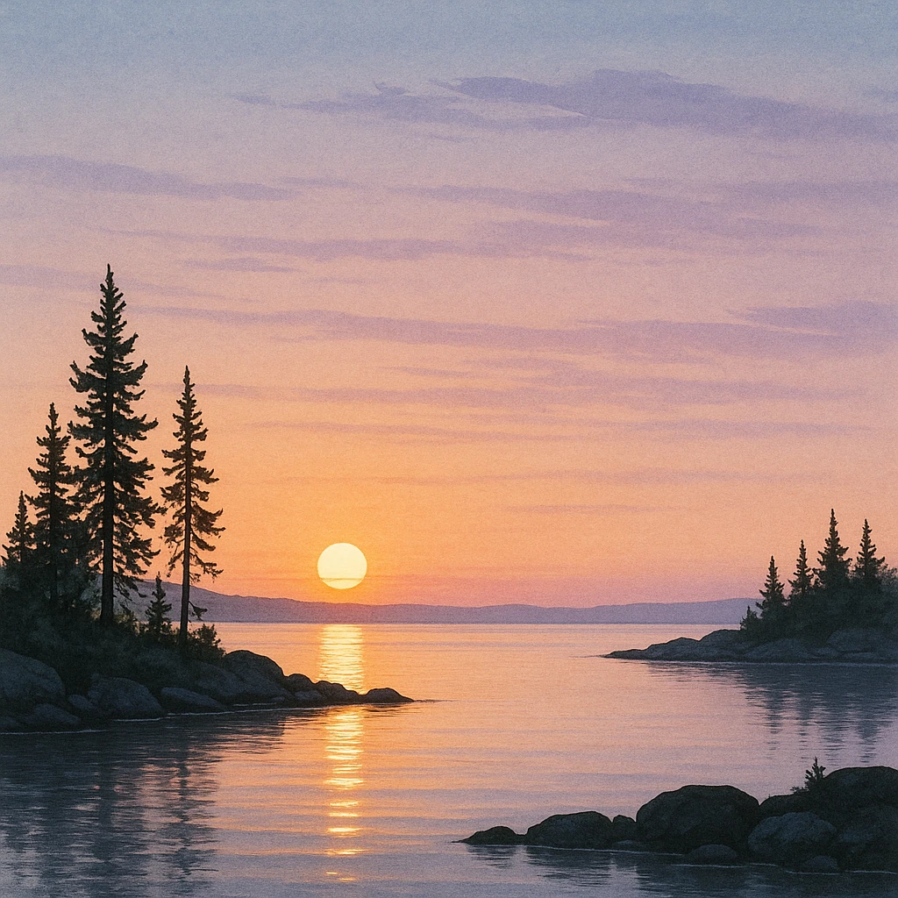
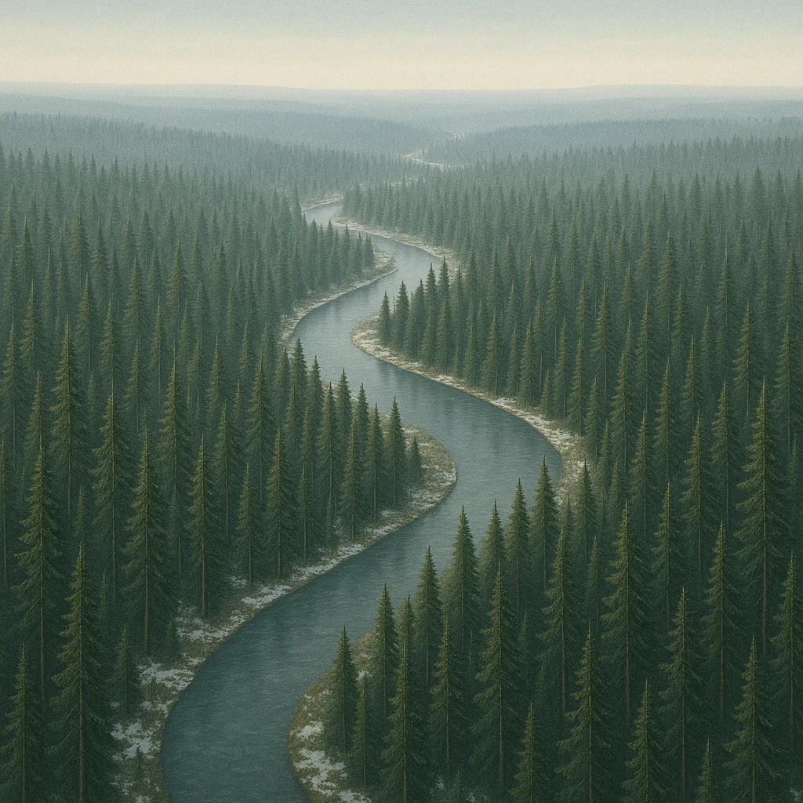

Ⅰ-3
気候カタログ
4つの地域で、気候をおさえる
北部
冷帯（亜寒帯）
気候。高緯度地方では夏に
白夜
がみられる。
中部
西岸海洋性
気候（温帯）。暖流の
北大西洋海流
と
偏西風
で、高緯度でも冬の寒さがきびしくない。
南部
地中海性
気候（温帯）。夏は
乾燥
し、冬に降水量が多くなる。
ロシア
冷帯（亜寒帯）
気候。国土の中央部には
タイガ
と呼ばれる針葉樹林が広がる。

真夜中でも、空がうす明るい

地平線まで続く針葉樹林
白夜
夏、太陽がしずんでも
うす明るい
状態が続くこと。高緯度地方の特徴。
タイガ
冷帯に広がる
針葉樹林
。ロシア〜シベリアに広がり、林業が盛ん。
第5章 ヨーロッパ州
SEED EDUCATION